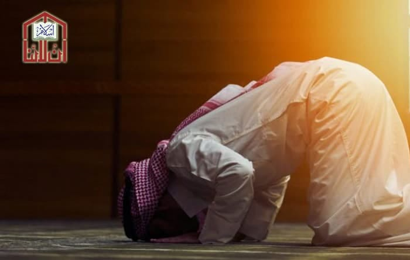

|
NAMAZ |
 |
|
|
NAMAZ KI AHMIYAT |
| blessings of the company of the devotees of Rasool. He became averted towards sins and inclined towards righteous deeds. He developed a mindset to act upon the Sunnahs. He made a firm intention to offer his Salahs punctually and he adorned his head with the crown of ‘Imamah [blessed turban] too. (Maflooj ki Shifa Yaabi ka Raaz, pp. 16) صَـلُّوا عَلَى الْـحَـبِيْب صَـلَّى الـلّٰـهُ تَـعَـالٰى عَـلٰى مُـحَـمَّد | |
|  |
نماز کی اہمیت قرآن وحديث كى روشنى ميںایمان کے بعد اسلام کا اہم ترین رُکن نماز ہے۔ قرآنِ کریم اور احادیثِ شریفہ میں نماز کے فضائل اور اس كى اہميت کو کثرت سےبيان كيا گيا ہے، نماز کو قائم کرنے پر بڑے بڑے وعدے اور نماز کو ضائع کرنے پر سخت وعیدیں وارد ہوئی ہیں۔ نبى كريم صلى الله عليہ وسلم پانچ فرض نمازوں کے ساتھ ساتھ نمازِ تہجد، نمازِ اشراق، نمازِ چاشت، تحية الوضوء اور تحية المسجد کا بھی اہتمام كرتے تھے۔ اور پھر خاص خاص مواقع پر اپنے رب کے حضور توبہ واستغفار کے لئے نماز ہی کو ذریعہ بناتے تھے۔ سورج گرہن یا چاند گرہن ہوتا تو آپ صلى الله عليہ وسلم مسجد تشریف لے جاتے تھے۔ زلزلہ، آندھی یا طوفان حتی کہ تیز ہوا بھی چلتی تو مسجد تشریف لے جاکر نماز میں مشغول ہوجاتے۔ فاقہ کی نوبت آتی یا کوئی دوسری پریشانی یا تکلیف پہنچتی تو مسجد تشریف لے جاتے۔ جب سفر سےآپ صلى لالله عليہ وسلم كى واپسی ہوتی تو پہلے مسجد تشریف لے جاکر نماز ادا کرتے۔ اس لئے ہمیں بھی چاہئے کہ نماز کا خاص اہتمام کریں، ذيل ميں نماز كى فضيلت، اور اس كى اہميت ، اور اس كے منافع سے متعلق كچھ آيات كريمہ اور احاديث نبويہ ذكر كى جارہى ہيں: نماز كے فضائل آیاتِ قرآنیہ كى روشنى ميںاے ایمان والو! صبر اور نماز کے ذریعہ مدد چاہو، بیشک اللہ تعالیٰ صبر کرنے والوں کے ساتھ ہے۔ (سورۂ البقرۃ ۱۵۳) جو کتاب آپ پر وحی کی گئی ہے اسے پڑھئے اور نماز قائم کیجئے، یقیناً نماز بے حیائی اور برائی سے روکتی ہے۔ (سورۂ العنکبوت ۴۵) اللہ تعالیٰ نے فرمادیا کہ میں تمہارے ساتھ ہوں اگر تم نماز قائم رکھوگے اور زکاۃ دیتے رہوگے۔ (سورۂ المائدہ ۱۲) اور اگر کوئی پریشانی یا مصیبت آئے تو نمازوں کی ادائیگی اور صبر کے ذریعہ اللہ تعالیٰ سے مدد مانگیں، یہ چیز شاق وبھاری ہے مگر اللہ تعالیٰ سے ڈرنے والوں کے لئے مشکل نہیں۔ (سورۂ البقرہ ۴۵) نماز کی اہمیت حديث كى روشنى ميںحضرت ابو ہريرہ سے روايت ہے، رسول اللہ صلى الله عليہ وسلم نے ارشاد فرمایا: سات قسم کے آدمی ہیں جن کو اللہ تعالیٰ اپنی (رحمت کے) سایہ میں ایسے دن جگہ عطا فرمائے گا جس دن اس کے سایہ کے سوا کوئی سایہ نہ ہوگا۔ اُن سات لوگوں میں سے ایک وہ شخص بھی ہے جس کا دل مسجد سے اٹکا ہوا ہو (یعنی وقت پر نماز ادا کرتا ہو) ۔ (صحيح بخارى: 660، صحيح مسلم: 1031) |